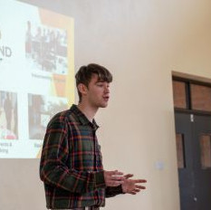
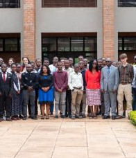
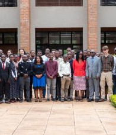
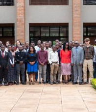
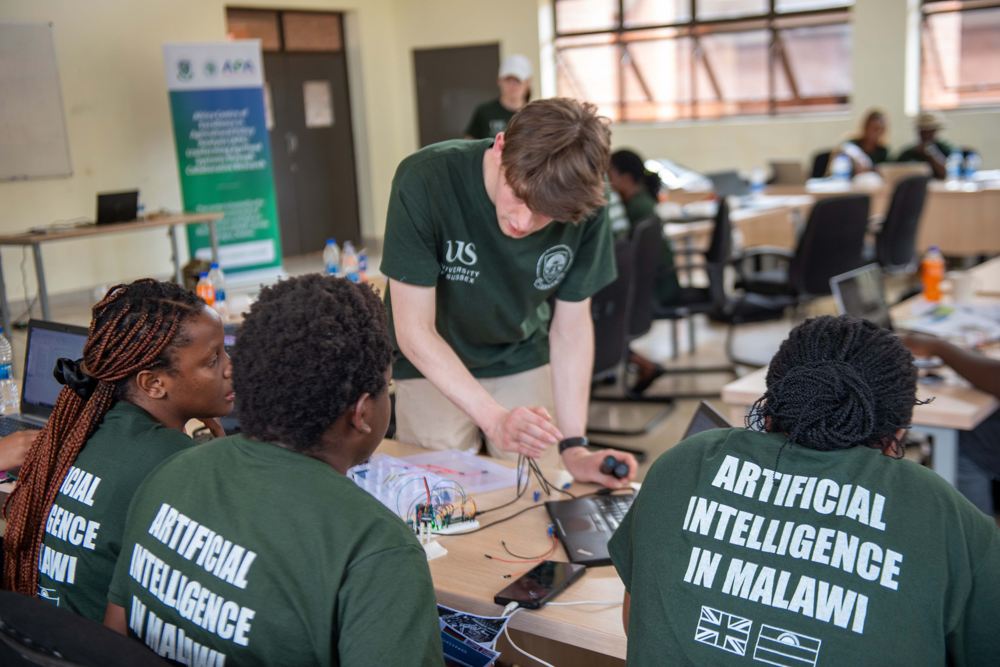
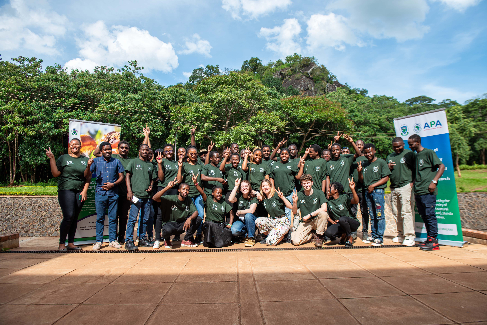
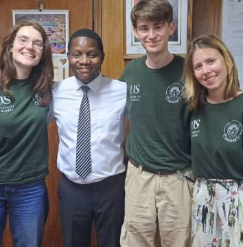
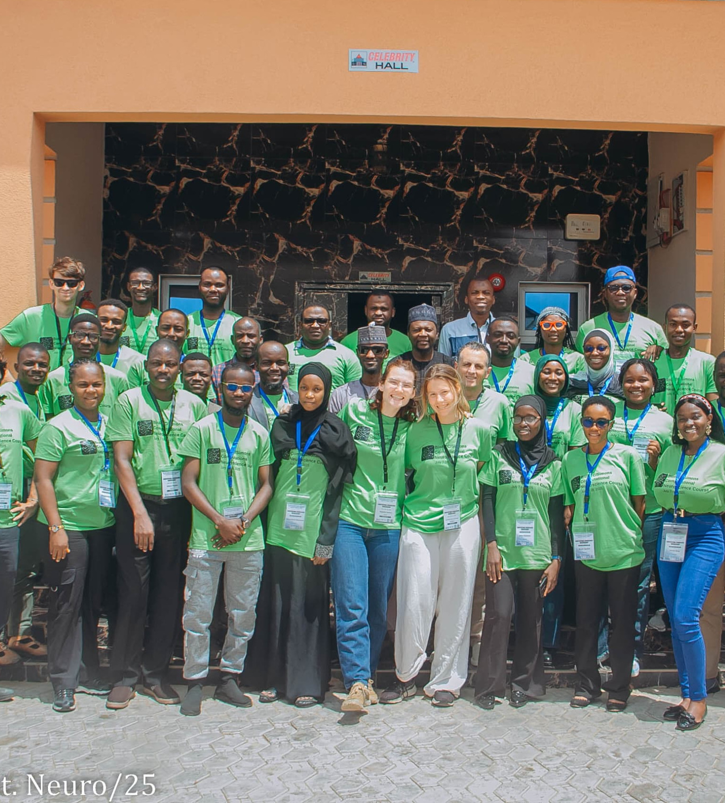
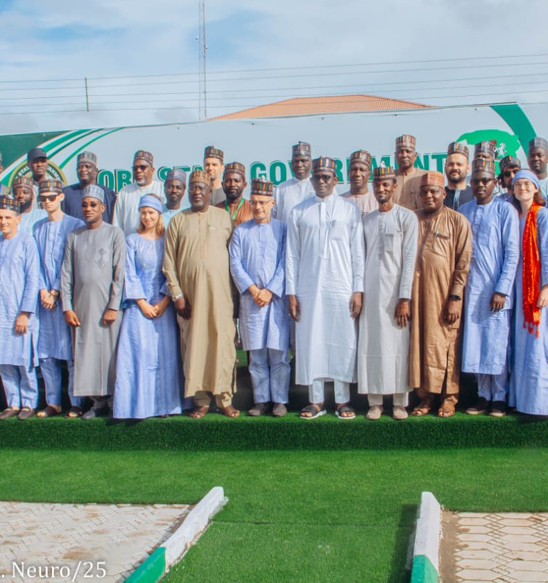
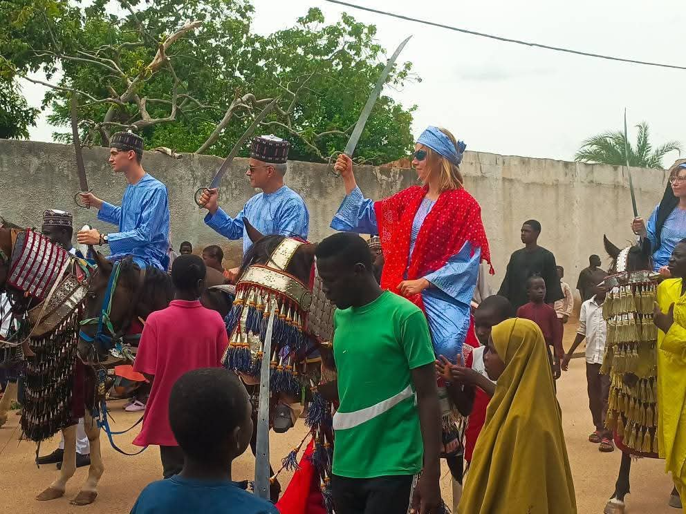

Outreach and International teaching
I began my outreach and teaching work in 2022 by collaborating with local schools on robotics projects using LEGO Mindstorms, helping to revitalise the university outreach programme following the COVID-19 pandemic. Over the summer, I designed and led hands-on workshops introducing students to engineering and computational thinking. Building on this momentum, I founded and organised a STEM fair at my university, which ran for several years and brought local schools onto campus to engage with interactive demonstrations and learn about research, robotics, and technology-driven careers.In 2024, I was selected as part of a teaching team delivering a data science and artificial intelligence course in Malawi, working with postgraduate agricultural students at Lilongwe University of Agriculture and Natural Resources. Over a two-week intensive programme, we taught Python, R, and machine learning methods applied directly to real-world agricultural challenges. My primary role was delivering the theoretical foundations of data science and AI, alongside supporting practical Python sessions as a teaching assistant. Beyond the classroom, we engaged with local farms to explore how data-driven approaches could improve productivity and decision-making in everyday agricultural practice.

 

Later in 2024, I led the development and delivery of an online Python support course. I coordinated a team to produce structured video content and interactive worksheets, and hosted live coding sessions where students could follow along in real time. This programme significantly expanded access to programming support and created a scalable learning resource for future cohorts.

In 2025, I took over leadership of the international AI projects and returned to Malawi to run a redesigned course focused on building low-cost data logging and scientific equipment, followed by applying machine learning techniques to analyse and classify the collected data. This initiative was specifically developed to bridge the gap between engineering, sensing, and artificial intelligence, addressing limitations identified in previous courses. Alongside teaching, we engaged with the Malawian Minister for Science and Innovation to discuss the transformative potential of AI and the role of education in national development.



Later in 2025, I was selected to join the teaching team at BIORTC in Nigeria, delivering a two-week intensive programme in Damaturu in collaboration with the Yobe State government. I was responsible for the machine learning and data science components, delivering both lectures and hands-on workshops. In addition to teaching, we participated in local cultural traditions and engaged in government-level discussions on education, technology, and innovation.



Towards the end of my PhD, I founded the ISAID (International Sussex AI Development) initiative to ensure that international outreach and capacity-building work would continue beyond my own involvement. The group now coordinates PhD student volunteers to provide ongoing technical mentorship to students in developing countries, supporting them directly with data science, engineering, and AI-based projects. Alongside this mentoring framework, ISAID actively pursues funding opportunities to expand the programme and enable further in-person teaching and collaborative research initiatives.